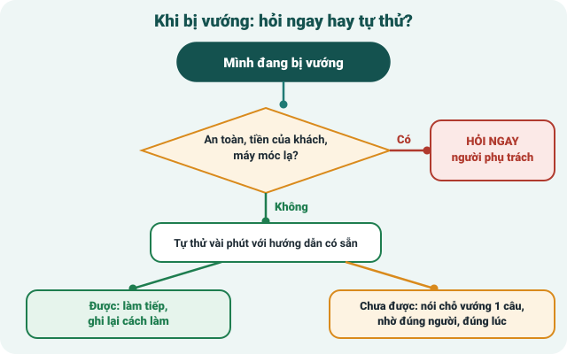

K3 · Giải quyết vấn đề và ra quyết định › Bậc 1 Làm quen
Nói rõ chỗ mình vướng và nhờ giúp đúng người, đúng lúc
Bài Bậc 1 (Làm quen). Bài Bậc 2 tiếp theo: Mô tả vấn đề và đề xuất phương án.
1. Mục tiêu
- Nói chỗ vướng trong 1 câu: đang làm gì, vướng ở bước nào.
- Chọn đúng người và đúng lúc để nhờ giúp.
2. Khởi động truy xuất
- Ba thói quen khi nghe chỉ dẫn là gì?
- Chỉ dẫn dài hơn 3 bước thì nên làm gì?
Đáp án
- Dừng tay nhìn người nói; nghe đến hết câu; nhắc lại theo thứ tự.
- Ghi lại ngay vào sổ hoặc điện thoại.
Xem lại: Nghe hết chỉ dẫn, nhắc lại.
3. Giải thích
Người mới thường mắc một trong hai lỗi. Lỗi thứ nhất: im lặng loay hoay quá lâu vì ngại hỏi. Lỗi thứ hai: hỏi ngay mọi thứ, kể cả việc tự tìm được.
Cả hai đều làm chậm công việc. Cách cân bằng gồm ba bước.
Ba bước khi bị vướng
- Tự thử một lầnXem lại hướng dẫn, mẫu có sẵn, hoặc ghi chú của mình.
- Nói rõ chỗ vướngMột câu: đang làm gì, vướng ở bước nào.
- Nhờ đúng người, đúng lúcNgười phụ trách việc đó, khi họ không bận việc gấp.
Bước 1. Tự thử một lần. Trước khi hỏi, dành vài phút xem lại hướng dẫn hoặc mẫu. Nếu vẫn chưa được, dừng lại và hỏi. Đừng loay hoay cả buổi.
Có một ngoại lệ quan trọng. Việc liên quan đến an toàn, tiền của khách, hoặc máy móc lạ thì hỏi ngay, không tự thử.
Bước 2. Nói rõ chỗ vướng. Câu "Em không biết làm" khiến người khác phải hỏi lại nhiều lần. Hãy nói cụ thể:
| Chưa rõ | Rõ |
|---|---|
| "Máy này em không biết dùng." | "Em in hóa đơn, máy báo lỗi giấy dù vừa thay cuộn mới." |
| "Em làm không được." | "Em nhập đơn tới ô địa chỉ thì không lưu được." |
Bước 3. Nhờ đúng người, đúng lúc. Đúng người là người phụ trách hoặc người đã chỉ bạn việc đó. Đúng lúc là khi họ không đang tiếp khách hay xử lý việc gấp. Nếu việc của bạn gấp, nói rõ: "Chị ơi, em cần hỏi gấp một chút."
Sau khi được giúp, hãy ghi lại cách làm để lần sau tự làm. Và đừng quên cảm ơn.

4. Ví dụ tại nơi làm việc Việt Nam
Tình huống giả định. Hà thực tập ở phòng hành chính một công ty nhỏ. Hà được giao gửi thư mời họp cho 20 người.
Hà soạn xong nhưng không biết lấy danh sách email ở đâu. Hà làm như sau:
- Tìm thử trong thư mục chung mà chị hướng dẫn đã chỉ. Không thấy.
- Chờ chị Lan họp xong, rồi hỏi: "Chị ơi, em soạn xong thư mời rồi. Em chưa tìm thấy danh sách email 20 người. Em lấy ở đâu ạ?"
- Chị Lan chỉ tệp. Hà ghi đường dẫn vào sổ tay và cảm ơn.
Vì sao cách này tốt: Hà tự thử trước, hỏi đúng người, chọn lúc chị Lan rảnh, và nói rõ chỗ vướng trong một câu.
5. Thực hành
Tình huống giả định. Bạn làm thêm ở quầy thu ngân siêu thị mini. Khách muốn đổi một gói bánh đã thanh toán. Bạn chưa từng làm việc đổi hàng trên máy tính tiền.
Viết câu bạn nói với trưởng ca.
Gợi ý 1
Việc này liên quan đến tiền của khách. Nên hỏi ngay hay tự thử?
Gợi ý 2
Câu hỏi cần nói: đang làm gì, vướng ở đâu, có khách đang chờ.
Lời giải mẫu
Hỏi ngay, vì liên quan đến tiền của khách. "Anh ơi, có khách muốn đổi gói bánh đã thanh toán. Em chưa biết thao tác đổi hàng trên máy. Anh chỉ em được không ạ? Khách đang chờ ở quầy."
6. Tự kiểm tra
Chọn đáp án. Mỗi lựa chọn đều có giải thích.
Câu 1. Câu nào nói rõ chỗ vướng nhất?
-
Chưa đúng. Chưa nói đang làm gì và lỗi xảy ra ở bước nào.
-
Đúng. Đúng. Có việc đang làm và hiện tượng cụ thể, người nghe biết ngay vấn đề.
-
Chưa đúng. Câu này không cho người giúp biết cần giúp ở đâu.
Câu 2. Bạn thấy mùi khét từ máy pha cà phê mà bạn chưa quen dùng. Bạn làm gì?
-
Chưa đúng. Việc liên quan an toàn và máy lạ thì không tự thử.
-
Đúng. Đúng. Việc an toàn thì hỏi ngay, không chờ tự thử.
-
Chưa đúng. Mùi khét có thể nguy hiểm. Cần báo ngay.
Câu 3. Bạn không nhớ cách đặt tên file báo cáo. Hướng dẫn đã gửi trong nhóm chat. Bạn nên làm gì trước?
-
Chưa đúng. Hướng dẫn đã có sẵn. Tự tìm trước giúp tiết kiệm thời gian của quản lý.
-
Đúng. Đúng. Tự thử một lần với tài liệu có sẵn, chưa được thì hỏi.
-
Chưa đúng. Đặt sai tên làm người khác khó tìm file.
Câu 4. Quản lý đang giải quyết khiếu nại của khách. Việc bạn hỏi không gấp. Bạn làm gì?
-
Chưa đúng. Chen vào lúc đang xử lý khách gây gián đoạn. Việc không gấp thì chờ.
-
Đúng. Đúng. Chọn lúc người kia không bận việc gấp.
-
Chưa đúng. Không hỏi thì bạn vẫn vướng. Chỉ cần chọn lúc khác.
7. Phản tư
- Bạn thường mắc lỗi nào hơn: ngại hỏi, hay hỏi quá sớm?
- Ở chỗ làm hoặc lớp học của bạn, ai là người nên hỏi về từng loại việc?
8. Áp dụng thật
Trong 7 ngày tới, mỗi lần cần nhờ giúp, hãy nói chỗ vướng trong 1 câu. Sau đó ghi lại cách làm vào sổ tay. Cuối tuần, đếm xem có bao nhiêu việc lần sau bạn tự làm được.
9. Siêu dữ liệu
| skill | K3 · Giải quyết vấn đề và ra quyết định |
|---|---|
| level | Bậc 1 · Làm quen |
| group | N2 |
| framework_map | WEF: Analytical thinking; CSfW: 3b Make decisions; 3c Identify and solve problems; SkillsFuture CCS: Problem Solving; NACE: Critical Thinking (chỉ dẫn chiếu) |
| updated | 2026-11-14 |
Hoàn thành bài
Đánh dấu đã học để site gợi ý lịch ôn sau 1, 3 và 7 ngày. Dữ liệu chỉ lưu trên máy của bạn.
Lịch ôn gợi ý: